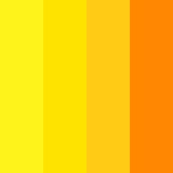
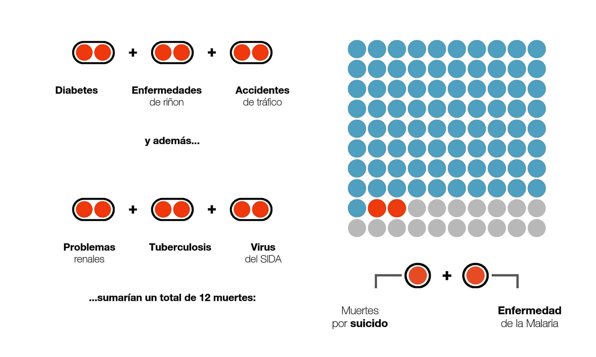

El Modelo Estándar, una de las teorías más brillantes de la física, recoge todas las partículas fundamentales de las que está hecho el Universo.
Somos 7000 millones de personas. ¿De qué moriría la gente si en el mundo solo hubiera 100 personas?. ¿De guerras? ¿de hambre?. Hoy muere más gente por suicidio que por asesinato.

Hemos llevado robots a Marte, pero nunca en las zonas donde hay más probabilidad de encontrar vida (tal y como la conocemos). Hay una razón: las leyes internacionales que protegen los posibles ecosistemas de otros planetas (y el nuestro). Estos son los protocolos de Protección Planetaria.
La historia del Universo comprimida en un año. En la gran historia de todo, hace tan solo unos segundos que la humanidad acaba de descubrir el fuego
Un antiguo buque de guerra de Pearl Harbor ha sido hundido artificialmente con el objetivo de crear una instalación artística submarina.
No siempre hemos estado solos: En el pasado había más de una especie humana poblando la Tierra. Los que quedaron acabaron conquistando la Luna. Esto es una breve reflexión sobre el origen del ser humano.
El Universo es un conjunto de historias. Cualquiera de ellas empezó hace 13.800 millones de años. La Tierra no es el único cuerpo con agua en el Sistema Solar. Es probable que ni siquiera el único con vida. Esto es una breve reflexión sobre nuestro génesis.